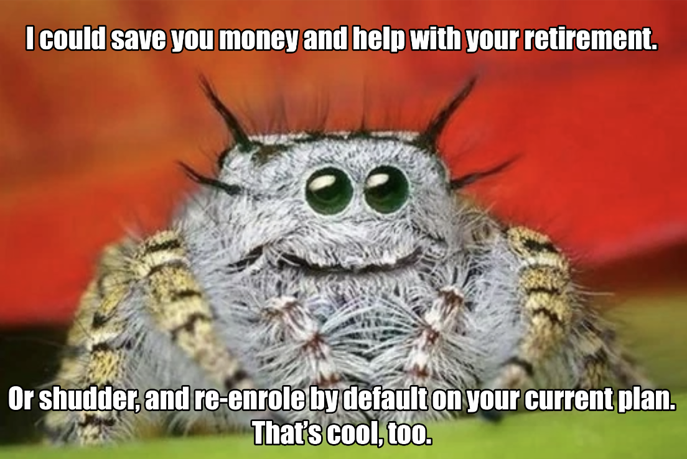
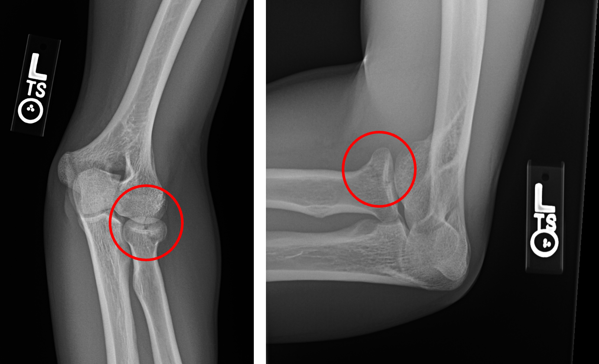
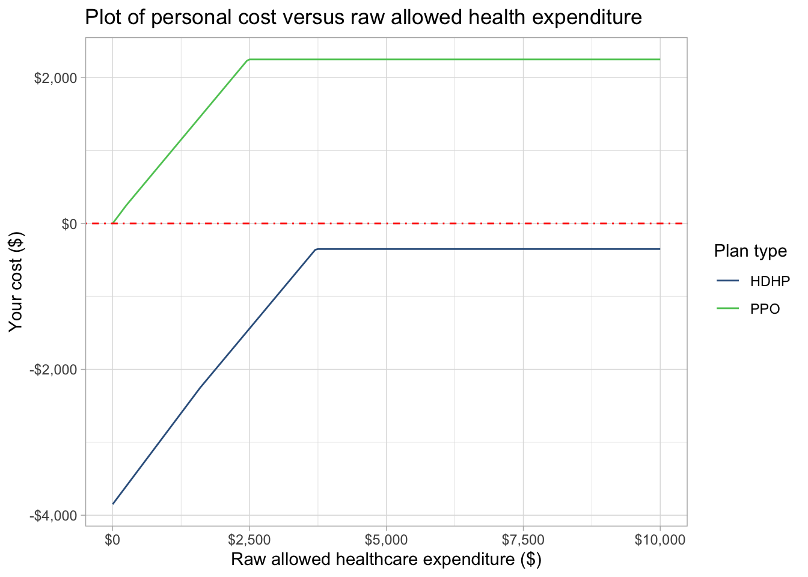

ppo_deductible <- 250
ppo_oop_max <- 2250
ppo_employer_contributes <- 0
ppo_premium <- 0
ppo_co_insurance <- .9
hdhp_deductible <- 1600
hdhp_oop_max <- 3500
hdhp_employer_contributes <- -3850
hdhp_premium <- 0
hdhp_co_insurance <- .9
health_spending_model <- function(raw_expenditure,
deductible,
co_insurance,
oop_max,
emp_contribution,
premium){
actual_expenditure <- if_else(
raw_expenditure <= deductible, raw_expenditure, if_else(
(deductible + ((raw_expenditure - deductible) * co_insurance) ) >= oop_max, oop_max,
(deductible + ((raw_expenditure - deductible) * co_insurance) )
)
) + emp_contribution + premium
return(actual_expenditure)
}
costsdf <- seq(0, 10000, 50) %>%
as_tibble() %>%
rename("raw_expenditure" = 1) %>%
mutate("PPO" = health_spending_model(raw_expenditure, ppo_deductible, ppo_co_insurance, ppo_oop_max,
ppo_employer_contributes, ppo_premium),
"HDHP" = health_spending_model(raw_expenditure, hdhp_deductible, hdhp_co_insurance, hdhp_oop_max,
hdhp_employer_contributes, hdhp_premium)) %>%
pivot_longer(cols = c("PPO", "HDHP"), values_to = "your_cost", names_to = "plan_type")
Disclaimer
This is employee-to-employee advice. I do not work for or represent the Human Resources, Benefits, Finance, or Legal teams. I have no stake in the health plan you elect. I am not a lawyer; I am not a financial advisor; I am not a medical professional. I am in no way qualified to advise you, and any decisions you make based on the content I am presenting remain your own decisions and responsibility. Your mileage may vary. Investing carries risk. Past performance is no guarantee of future performance. This presentation is furnished as is, without warranty of the presentation whatsoever, whether express, implied, or statutory, including, but not limited to, any warranty of merchantability or fitness for a particular purpose or any warranty that the contents of this presentation are error-free. If you have received this presentation in error, please notify the presenter and delete the content from your brain immediately. Side effects may include nausea, dizziness, and drowsiness.
Consult your own financial advisor, lawyer, doctor, and/or benefits professional.
High-Deductible Health Plan + Health Savings Account Tech Talk
Background: Basics medical benefit plan definitions
- Premium: the amount you pay for your plan from your paycheck
- Deductible: a fixed amount that you must pay out-of-pocket before your plan begins paying for expenses
- Co-pay/co-insurance: a flat (percentage) rate that you pay for each medical event
- Out-of-pocket maximum: an upper bound on what you pay from your personal accounts in a given plan year; after this is hit, plan will cover everything at 100% (no co-pay/co-insurance)
- Medical Spending Account: account for pre-tax money diverted from your paycheck to be used for qualifying medical expenses:
- Flexible Spending Account (FSA): traditional “use it or lose it” annual account for PPOs
- Health Savings Account (HSA): only available to high-deductible plan participants
So why are we instinctively afraid of high-deductible plans?
Over the years, we’ve been conditioned to think about healthcare in certain ways. For example, we think that Premiums work like: “you pay more for more doctor options”, or “deductible: smaller is better”. But we lose sight of our sunk costs, like premiums and taxes. FSA example: if you put $1,000 in an FSA, and lose $200 because you can’t spend it, that feels terrible and you are likely to put in less next year, because you’ve lost sight of what would have happened if that money were taxed— if your tax bracket is 30%, you are still $100 ahead!
We also tend to think in annual cycles for health care. But if there were the ability save or ‘carry over’ unspent dollars from year to year, that situation would open up to budgeting healthcare over multiple years. And one thing actuaries know about budgeting for unpredictable events with a high spread of potential costs: averaging over time makes the ending outcome more predictable. (See the central limit theorem).
What we haven’t been conditioned to think about is: premiums as a function of deductibles; costs summed / averaged over multiple years; tax & retirement benefits of healthcare budgeting.
The case for hgih-deductible health plans: the health savings account (HSA)
- The high deductible sounds scary, but it’s covered by the combination of your employer’s contribution to your HSA and the money you save on monthly premiums. You are paying it with “house money,” and if you don’t spend all of that, you keep it.
- The HSA is the very best supplemental retirement savings vehicle there is; in some ways, it’s even better than your 401K, which every financial planner tells you is the first thing you should max out.
- The upper bound (out-of-pocket max) on HDHPs means the scenarios in which you could end up paying more than you would on a PPO or EPO/HMO are probably pretty narrow even in a single year, and across multiple years the risk is very low.
- HDHP plans are generally the same plan network as that insurer’s PPO or EPO/HMO. Everything about it is the same, except for how you pay for it. Your doctor doesn’t care. Switch, switch back, no issue.
But what if I have an expensive year?
My 2020, among other ongoing medical events:

You can have a bad year, but it won’t be as bad as it may seem at first:
- $28k billed
- $12k allowed by insurance
- $3.5k is what I had to pay
An example 2023 comparative cost model
These numbers are purely hypothetical and in no way related to my or any specific employer.
Make cost model data frame
Plot cost model
costsdf %>%
ggplot(aes(x = raw_expenditure, y = your_cost, color = plan_type)) +
geom_line() +
scale_color_viridis_d(option = "D", begin = 0.3, end = 0.75) +
geom_hline(yintercept = 0, linetype = "dotdash", color = "red") +
scale_x_continuous(label = scales::label_currency()) +
scale_y_continuous(label = scales::label_currency()) +
labs(title = "Plot of personal cost versus raw allowed health expenditure",
x = "Raw allowed healthcare expenditure ($)",
y = "Your cost ($)",
color = "Plan type")
Assumes 100% in-network providers, co-insurances are 90% of total accepted expenditure.
The HDHP is actually less expensive than PPO until >$11,000 of raw expense. Because both plans have 90% co-insurance, the amount paid by each is similar when under the OOP Max.
HDHP costs 11.1% more than PPO until reaching the deductible.
Because the OOP Max for the HDHP is lower than the HSA contribution (from the employer), there is no medical expense scenario when this model keeps less than $350 at the end of the year.
The HSA: a very different medical spending account
“From a tax standpoint, an HSA is the best thing out there because it has a triple tax advantage,” Fronstin says. “The money goes in tax free, it builds up tax free and it comes out tax free” if withdrawn for qualified medical expenses.
NYT The Triple Tax Break You May Be Missing: A Health Savings Account
CA, NJ, and AL tax HSA contributions; NH and TN tax earnings.
- No “use it or lose it”— it’s your money.
- Treated like a 401K account: pre-tax, interest-earning, able to be invested in stocks, etc.
- Not tied to your employer: your HSA goes with you, can be rolled over into another HSA (like 401K)
- $4,150 individual contribution limit; $8,300 contribution family limit (2024 IRS limits)
- Employer may contribute some or most of that, as an employee benefit.
- If 55 or over, extra $1,000/year “catch-up” contributions are permitted
- Interest/investment growth is tax-free..
- CA, NJ, and AL tax HSA contributions; NH and TN tax earnings.
- At retirement age, can withdraw and use for any reason, but taxed as income (with no penalty) (like traditional IRA).
- Withdrawal after retirement age decreases the number of tax advantages from 3 to 2.
- If used for qualifying medical expenses, neither the principal nor the growth is ever taxed!
Multi-Year Thinking
We’ve been taught to think in annual cycles, and to over-value downside risk. Think about the upside benefit of a light year: one year in which I spend only half of my premium savings + employer contribution “stake” can cover the downside risk of years when I spend more. PPO premiums are sunk costs—you will never see that money again.
Multiply your contribution (not your employer’s contribution) by your tax bracket—that is free money (in that it would have been taxed at that marginal rate if it were instead kept in your paycheck).
Your employer’s contribution is free money.
CA, NJ, and AL tax HSA contributions; NH and TN tax earnings. IRS Publication 969
If you meet your deductible in 2024, pack all your annual checkups into the end of 2024 and the beginning of 2026, and look to have a light year in 2025.
Banking your receipts: you can claim your HSA reimbursements at any time, so you can “bank up” your reimbursable expenses across years, allowing your money to grow tax-free in the HSA, but leaving you the option to reimburse yourself tax-free for multiple years worth of expenses at any time. No reason or justification is required; just keep the receipts and records of when each was withdrawn from the HSA in case the IRS asks to see.
Qualifying to contribute to an HSA
Requirements
- You are enrolled in a high-deductible health insurance plan.
Disqualifications
- You must NOT be covered by a disqualifying health plan (like another plan) (except for dental, vision, and other specific exceptions).
- To be disqualified, you must be actively covered, not just eligible to get coverage (say, during open enrollment).
- You must NOT be enrolled in medicare.
- You must NOT be claimed as a dependent on someone else’s tax filing.
The fine print: things to watch out for
- You are responsible for record-keeping—IRS can audit, so you need records for at least 3 years, probably 6 (IRS page on audits)
- taxes + 20% penalty due for any money withdrawn that you can’t prove was “qualified”
- count years from when you withdrew from the HSA, not when the medical expense happened
- The State of California (among others) taxes contributions, interest, and capital gains of HSAs. (Employers document this on W-2; state vs. federal taxable incomes will be different.)
- HSA contributions are taxable to California residents; use Schedule CA (540) “other earned income.”
- You will need to file an extra schedule with your taxes (IRS form 8889).
- You will become a savvier medical consumer—it’s your money! Watch for mis-billing, look at service costs up front.
- Don’t underestimate the possibility you will end up going out-of-network when you do your calculations.
- If you invest your HSA money in index funds, it may grow faster, but not be FDIC-insured.
In summary: what have we learned?
Playing with house money: with your employer’s contribution, your premium savings, and the money you would have put in an FSA, you’re already better than break-even on the deductible; if you don’t meet your deductible in a given a year, you get that benefit instead of the insurance company.
Think multi-year when assessing risk: it’s possible you might pay a little more in a really expensive year, but you will pay a lot less in a good year; across years, it’s hard to lose.
HSAs are awesome: max out your contribution of pre-tax money to the HSA and get even better tax advantages than your 401(k); avoid taxes on it completely if you continue to use it for medical expenses after you retire.